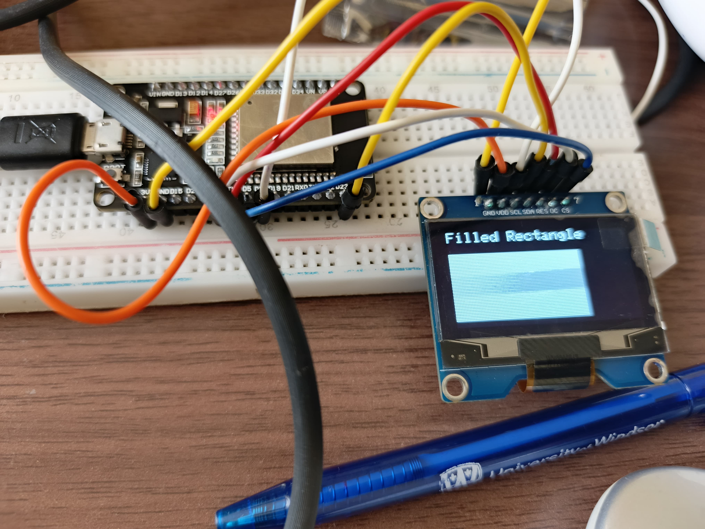
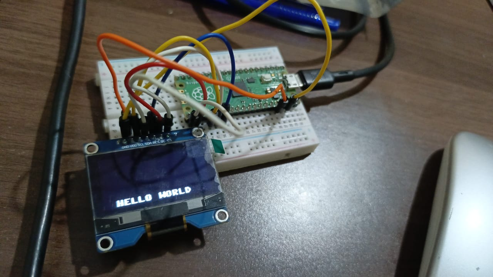

Wired Communication Protocols (i)
This is a continuation of wired communication protocals with focus being:
- Interfacing Raspberry Pi Pico using SPI
- Interfacing ESP32 using SPI
📺 ESP32 + SSD1306 OLED Display
1. Introduction
This guide shows how to interface a 0.96″ monochrome SSD1306 OLED display (128×64 pixels) with an ESP32 using SPI communication. OLED displays offer excellent contrast, deep blacks, and wide viewing angles due to their self-emissive pixels.
2. SSD1306 Display Basics
- Resolution: 128×64 pixels
- Memory: 1024 bytes GDDRAM (8 pages × 128 segments × 8 bits)
- Interface: SPI (7-pin module)
- Pins: GND, VCC, SCK, MOSI, RES, DC, CS
3. Wiring Connections
Connect the OLED display to your ESP32 using the following pin assignments:
| OLED Pin | ESP32 GPIO | Function |
|---|---|---|
| GND | GND | Ground |
| VCC | 3.3V | Power Supply |
| D0 (SCK) | GPIO 18 | SPI Clock |
| D1 (MOSI) | GPIO 23 | SPI Data |
| RES | GPIO 17 | Reset Pin |
| DC | GPIO 16 | Data/Command |
| CS | GPIO 5 | Chip Select |
4. Arduino IDE Setup
- Adafruit SSD1306 library
- Adafruit GFX library
Make sure to select the ESP32 board in Tools → Board.
5. Sample Code
Basic initialization code for the SSD1306 display:
#include <SPI.h>
#include <Adafruit_GFX.h>
#include <Adafruit_SSD1306.h>
#define SCREEN_WIDTH 128
#define SCREEN_HEIGHT 64
#define OLED_MOSI 23
#define OLED_CLK 18
#define OLED_DC 16
#define OLED_CS 5
#define OLED_RESET 17
Adafruit_SSD1306 display(SCREEN_WIDTH, SCREEN_HEIGHT,
OLED_MOSI, OLED_CLK, OLED_DC, OLED_RESET, OLED_CS);
void setup() {
Serial.begin(115200);
if(!display.begin(SSD1306_SWITCHCAPVCC)) {
Serial.println(F("SSD1306 allocation failed"));
for(;;);
}
display.display();
delay(2000);
display.clearDisplay();
}
void loop() {
// Your display code here
}
6. Display Capabilities
The SSD1306 display can show:
- Static and inverted text
- Scrolling text
- Different font sizes
- Geometric shapes (lines, rectangles, circles, triangles)
- Custom bitmap images
7. Conclusion
This tutorial provides a complete guide for connecting and programming an SSD1306 OLED display with ESP32. It's perfect for IoT projects, sensor displays, and embedded applications requiring a compact, high-contrast screen.
Interfacing Raspberry PI Pico using SPI
The following is a summary of the tutorial on interfacing an SPI SSD1306 OLED with a Raspberry Pi Pico using MicroPython:
🛠️ SSD1306 + Raspberry Pi Pico via SPI
1. Overview
-
Interface a 128×64 SSD1306 OLED display with a Raspberry Pi Pico using SPI and MicroPython.
-
Requires writing a driver (
ssd1306.py) that implements anSSD1306_SPIclass.
2. ssd1306.py Library Highlights
-
Defines
SSD1306_SPIclass inheriting from frame buffer driver. -
__init__(…)sets display size, SPI bus, and control pins (DC, RES, CS) and performs reset/init sequence. -
Methods:
-
write_cmd(cmd): Sends command byte via SPI. -
write_data(buf): Sends a data buffer to display.
-
-
SPI speed set at ~10 MHz. (github.com, techatronic.com, reddit.com)
3. Wiring & Initialization
-
Use SPI(0) on Pico with:
-
SCK → GPIO18
-
MOSI → GPIO19
-
CS → GPIO16
-
-
DC and RST pins are chosen arbitrarily (e.g., GPIO17, GPIO20).
-
Example init code:
spi = SPI(0, 100000, mosi=Pin(19), sck=Pin(18)) oled = SSD1306_SPI(128, 64, spi, Pin(17), Pin(20), Pin(16)) ``` :contentReference[oaicite:13]{index=13}
4. Main Script (main.py)
-
Imports necessary modules and initializes SPI and display.
-
Example animation loop:
from machine import Pin, SPI from ssd1306 import SSD1306_SPI from time import sleep_ms spi = SPI(0, 100000, mosi=Pin(19), sck=Pin(18)) oled = SSD1306_SPI(128, 64, spi, Pin(17), Pin(20), Pin(16)) while True: try: for i in range(40): for j in range(56): oled.fill(0) oled.text("HELLO WORLD", i, j) oled.show() sleep_ms(10) except KeyboardInterrupt: break ``` :contentReference[oaicite:16]{index=16} -
Scrolling “HELLO WORLD” diagonally until interrupted.
5. Outcome & Feedback
-
Tutorial demonstrates a working SPI MicroPython driver for SSD1306 on Raspberry Pi Pico.
-
User comments confirm compatibility with Pico W after reformatting. (techatronic.com)
6. Related Resources
-
Other tutorials (e.g., Random Nerd) cover SSD1306 over I2C for Pico .
-
GitHub repo by rongrimes extends the SPI driver with demos and graphics (github.com).